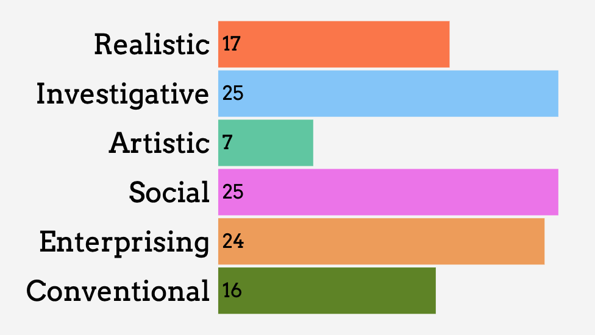

What is RIASEC?
RIASEC stands for Realistic, Investigative, Artistic, Social, Enterprising, and Conventional. It is a model of career interests developed by John Holland, which suggests that people are most satisfied in work environments that match their personality types.
My Results
My Recommendations
My career field recommendations for my RIASEC profile of SIE based can be found HERE.
My Conclusions
In conclusion, I don't disagree nor agree. I was only given one career as an anesthesiologist. I had absolute 0 idea about what that was at first but now that I researched about it, I now understand what it is and I wouldn't mind pursuing it as long as I don't get sued :)